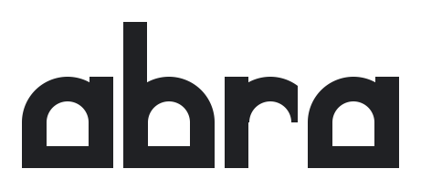
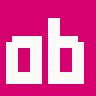
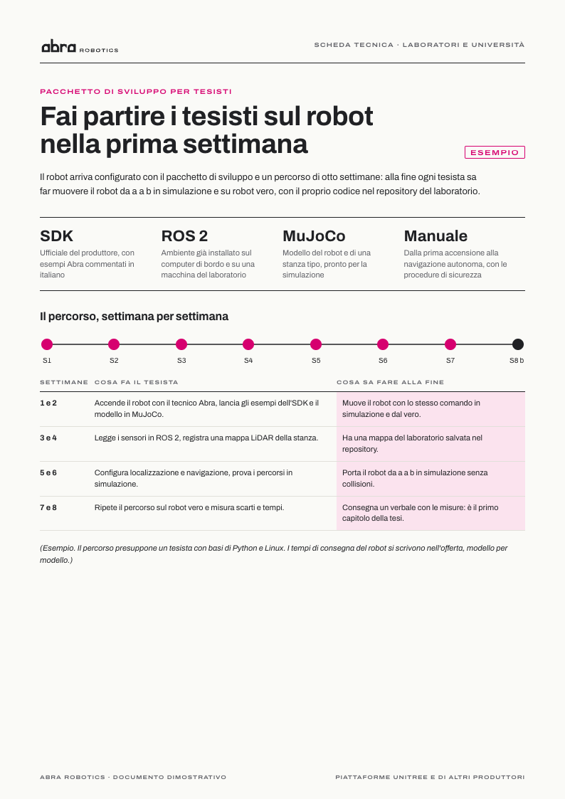

Prova
generale
Prima di ogni debutto c'è la prova generale. Abra fa vedere il robot al lavoro sul caso del cliente prima che investa, e lo scrive con quattro archi scenici.

Prima di ogni debutto c'è la prova generale. Abra fa vedere il robot al lavoro sul caso del cliente prima che investa, e lo scrive con quattro archi scenici.
01 · L'idea
In italiano "prova" è la verifica tecnica ed è anche la prova di uno spettacolo. Il posizionamento "Prima la prova" e il teatro chiedono la stessa cosa: ripetere tutto prima della sera in cui conta.
Dal teatro la direzione prende due strumenti. L'arco scenico del teatro all'italiana, tetto tondo e base piana, che diventa la forma delle lettere. E la pianta dei movimenti, dove la regia segna il percorso di ogni interprete da una posizione "a" a una posizione "b": lo stesso gesto della navigazione autonoma di un robot, provata prima in simulazione e poi dal vero.
Documento: preventivi, post aziendali, biglietto, scheda per i laboratori. Carta e Grafite, Archivo Bold, il magenta solo nei punti della pianta delle fasi.
Scena: reel, totem, livrea, fiere. Grafite, magenta pieno dentro l'arco, Archivo Condensed in grande, il pubblico disegnato davanti al robot.
Marchio, griglia e pianta delle fasi sono gli stessi nei due registri; cambiano la quantità di colore e la larghezza del carattere.
02 · Il marchio

Occhiello ad arco: tetto tondo, base piana a e b speculari Disegnato a mano, nessun font"abra" in minuscolo geometrico: ogni occhiello è un arco scenico, la "a" ha l'angolo tondo a sinistra e la "b" a destra, e la parola alterna tondi e squadrati come una fila di quinte.
Il simbolo è "ab": due portali affiancati, l'iniziale del nome e il movimento base del metodo, da a a b. "Robotics" è un descrittore separato in Archivo Expanded. Il marchio da depositare è il logotipo con il simbolo, in bianco e nero.
Piccoli formati: favicon disegnata a pixel

03 · Colore
Il magenta è la gelatina che ogni tecnico luci tiene in valigia, è un primario di stampa e porta il nome di una città lombarda. Nessuna delle altre direzioni lo usa, e nessun competitor rilevato. Nei documenti copre il 2 a 4% della pagina; nella scena riempie l'arco. Grafite su Carta 15,4 : 1, Carta su Magenta 4,9 : 1: tutte le coppie usate nelle applicazioni sono almeno AA.
04 · Tipografia
05 · Sistema grafico
 Misura
Misura Simulazione
Simulazione POC a fasi
POC a fasi Codice
Codice Formazione
Formazione Eventi
Eventi(Le configurazioni che rispettano il criterio passano in magenta. Dati inventati per l'esempio.)
06 · Fotografia

Luce vera, persone al lavoro, scala dichiarata, i dischi "a" e "b" sul pavimento.
Il robot resta del suo colore: il magenta entra solo come oggetto reale, i dischi a terra o una gelatina vera su un proiettore. La shot list per la consegna SACMI del 29 ottobre e per la prima demo del G1 è in foto-video.md.
(Esclusi: fondo nero con luce radente, foto virate, cieli stellati, piste di luce, robot che ballano, mani che si toccano.)
07 · Applicazioni





08 · Voce
Frasi brevi, tempi e luoghi esatti, imperativi con il beneficio, i limiti scritti come didascalie nella stessa pagina.
Guarda il robot lavorare sul tuo caso, prima di investire.
Misura il tempo ciclo dei vasetti a fine linea prima di investire.
Fai partire i tesisti sul robot nella prima settimana.
Noleggia l'umanoide per il tuo evento, con un tecnico Abra in sala.
«Va in lavastoviglie solo la griglia. Le mostro come si smonta?» (Dal copione approvato dal marchio, esempio.)
09 · Cosa scegliamo di perdere
Il magenta è insolito nella robotica industriale. Per questo nei documenti resta in punti e fili, e nella scena è una campitura sola.
"ab" va imparato. Il primo contatto usa sempre il logotipo intero; il simbolo da solo vive su avatar, adesivi e favicon.
Sipari, riflettori e palco acceso sono usciti dal sistema. Restano l'arco scenico e la pianta dei movimenti.